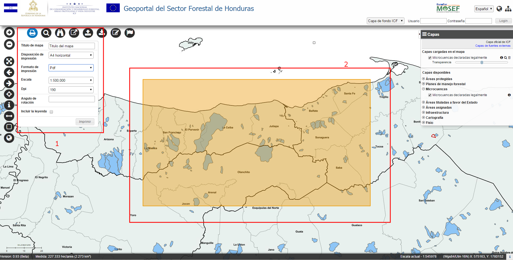
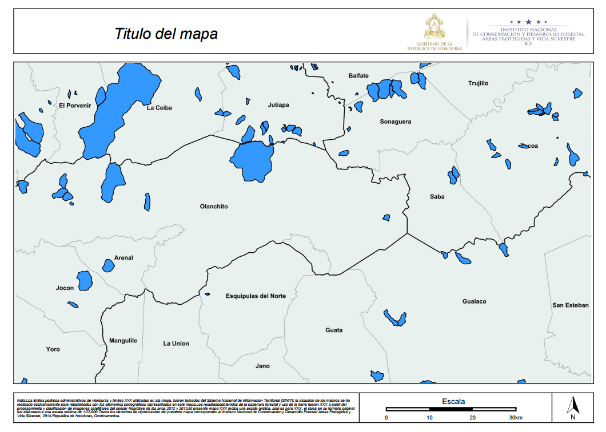

Permite de configurar diferentes tipos de impresión/exportación del mapa a través de diferentes valores de las características disponibles.

Imprimir el mapa
Al pulsar el botón, aparece una ventana che corresponde a la porción del mapa que se desea imprimir a la escala actual y un formulario para definir las características como:
Al modificarse del formato y de la escala varía la dimensión de la ventana visualizada.
El usuario puede navegar el mapa posicionando la ventana en la zona deseada.
Al pulsar el botón Imprimir se genera un archivo en nel formato seleccionado con la impresión del mapa, que se puede descargar y salvar, composta de dos páginas, una con el mapa y la otra (si requerid) con la leyenda.
Esta impresión está basada sobre una plantilla predefinida que incluye varios elementos, como el mapa, la escala, los datos insertados por el usuario (Titulo), etc.
La impresion genera un documento como el siguiente:

Impresion del mapa